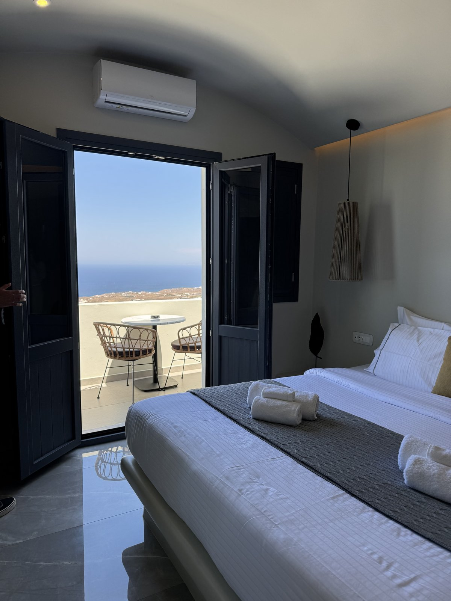
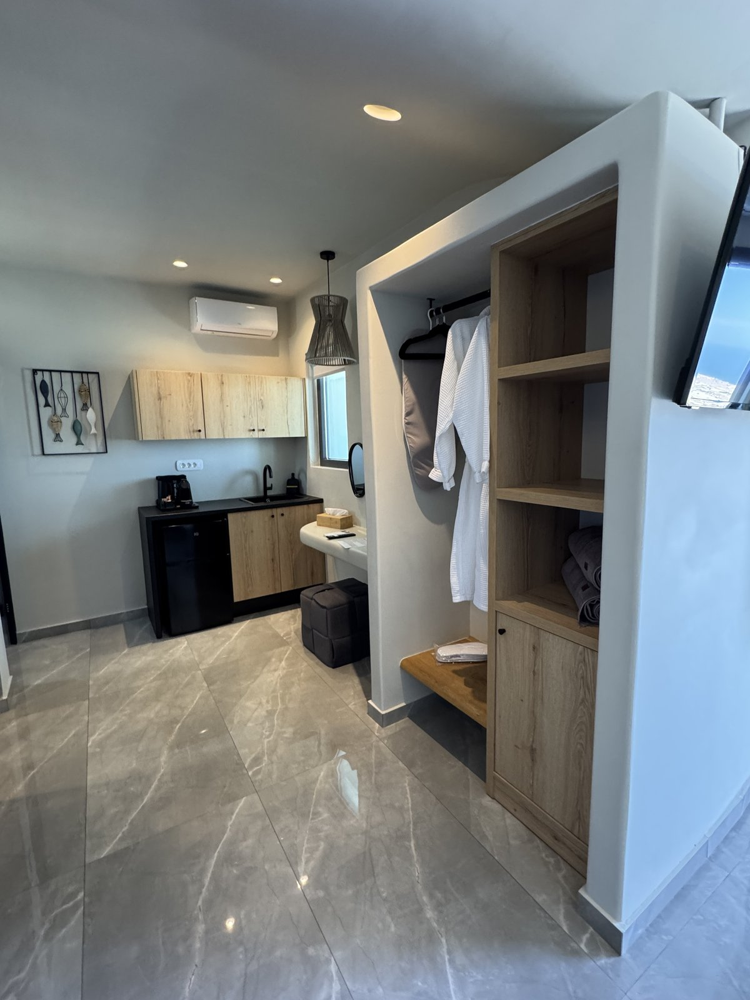
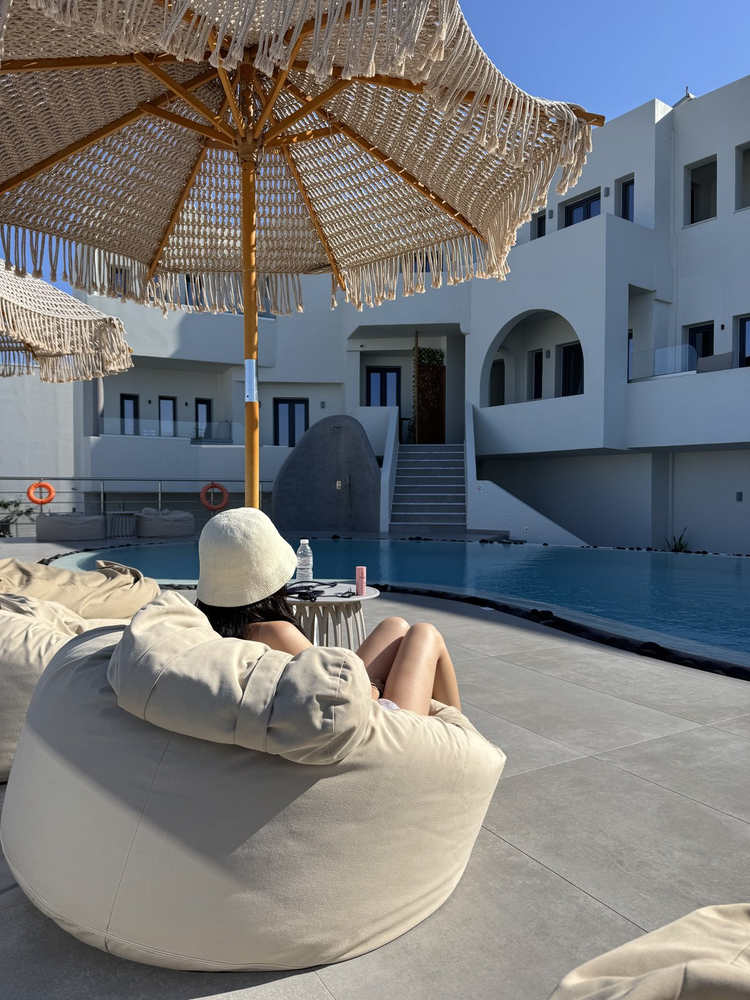
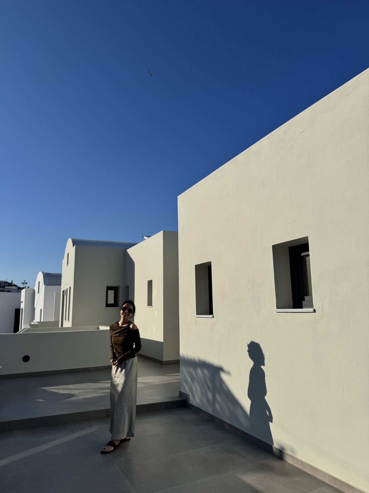

Kudos Suites Firostefani 是這趟聖托里尼住宿裡，讓我們一直記得服務細節的一間。從抵達、check-in、公共空間到房間配置，都讓人覺得很舒服，不會有拘束感。
問題可以直接傳訊息詢問，回覆也很親切。甚至後來我們準備退房前往伊亞，他們還說只要還在聖托里尼島上，有任何問題都歡迎聯絡，讓人覺得很溫暖。

如何抵達 Kudos Suites
我們下船後是搭 public bus 到費拉總公車站，再拖行李步行去飯店。這段路可以走，但沿路有上坡，多是石板路，拖行李真的會比想像中累。
如果你的行李比較多、天氣炎熱，或不想一抵達聖托里尼就開始體力考驗，我們會建議預約 Kudos 的接駁（2026/5 約 €40–50），抵達當天會輕鬆很多。
入住與第一感受
Kudos 一般入住時間是下午 3 點。這天我們因為早上搭船，大約 11 點就到 Kudos了，櫃檯人員很親切，先幫我們辦理check in 手續、保管我們的行李，讓我們可以輕便的先去逛逛或在公共區域休息。
Check-in 的時候，櫃檯還會貼心提供非常多行程推薦，順便介紹附近的景觀餐廳和周邊景點。如果想訂船隻行程或租車，也可以直接請他們協助。
飯店可以加購早餐，大約 €12–15 / 人，每天菜色不同。Check-in 時櫃檯會一起介紹，如果你不想一早出門找早餐，可以考慮直接在飯店吃。
房型開箱｜高級海景套房


房間風格
我們入住的是高級海景套房。房間是現代冷灰調，搭配一點藤編度假感，不是傳統聖托里尼洞穴屋那種純白風格，而是比較乾淨、沉穩，也更像一間舒服的度假套房。
空間與設備
空間比我們預期寬敞。除了矮桌之外，還有另外設置梳妝區，收納空間也夠用。浴室是雙洗手台，兩個人早上整理時不用輪流等，這種小地方在旅行中其實很加分。
海景與私人小按摩池
開窗或打開陽台門可以看到海景，雖然不是貼海第一排的震撼視角，但景色依然漂亮。房間外有室外私人小按摩池，面朝大海，可以一邊泡著一邊看海和天空。晚上燈打開後也很有氣氛，早上泡、晚上泡都適合。
日落方向提醒
我們這間房的朝向不是西側，所以無法直接看到日落。如果你對「房間能不能看日落」很在意，訂房或入住前一定要先跟飯店確認房間朝向。
戶外泳池休息區
泳池區是我們覺得很放鬆的地方。躺椅區旁邊有懶骨頭和大洋傘，搭配輕鬆的度假風音樂，坐著坐著真的很容易就想睡著。入住期間泳池區人不多，旁邊只有一組客人，完全不會有擁擠感。


周邊介紹
飯店附近有一間 mini market，往上走一小段路就到，補零食、飲料或臨時需要的小東西都方便。
要走到主要徒步區逛街吃飯也不會走很遠，只有從飯店往道路走有個小上坡，要注意路上的小石子不要被絆倒了。
整體感受
Kudos 的房價落在中等價位，房間空間、服務細節和公共區域的完整度都有讓人感覺到它的價值。重視住宿舒適度、房間大小，想真的有放鬆的感覺，這間很適合！
優缺點整理
推薦原因
- 房間寬敞，有梳妝區、充足收納和雙洗手台
- 私人小按摩池面海，白天晚上都適合泡
- 泳池與公共休息區舒服，不擁擠
- 櫃檯服務細心，可協助餐廳、行程與租車資訊
需要注意
- 從費拉總公車站拖行李步行會比較費力
- 房間朝向不一定能看日落，訂房前要確認
- 早餐需加購，約 €12–15 / 人